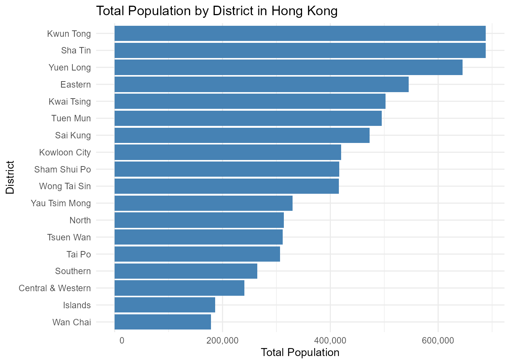

ChinAPIs: Access Chinese Data via Public APIs and Curated Datasets
Source:vignettes/ChinAPIs_vignette.Rmd
ChinAPIs_vignette.Rmd
library(ChinAPIs)
library(ggplot2)
library(dplyr)
#>
#> Attaching package: 'dplyr'
#> The following objects are masked from 'package:stats':
#>
#> filter, lag
#> The following objects are masked from 'package:base':
#>
#> intersect, setdiff, setequal, unionIntroduction
The ChinAPIs package provides a unified interface to
access open data from the World Bank API,
Nager.Date API, and the REST Countries
API, with a focus on China. It allows users to
retrieve up-to-date information on topics such as economic indicators,
population statistics, unemployment rates, holidays, and basic
geopolitical details.
In addition to API-access functions, the package includes one of the largest curated collections of open datasets related to China and Hong Kong. These datasets cover areas such as air quality, demographic indicators, input-output economic tables, epidemiology, administrative divisions, name distributions, political structure, and various social indicators.
ChinAPIs is designed to support users working with data
related to China by combining international API sources
with structured datasets from public, academic, and governmental sources
in a single, easy-to-use R package.
Functions for ChinAPIs
The ChinAPIs package provides several core functions to
access real-time and structured information about China
from public APIs such as the World Bank API,
Nager.Date, and REST Countries.
Below is a list of the main functions included in the package:
get_country_info_cn(): Get key geopolitical and administrative information about China from the REST Countries APIget_china_gdp(): Get China’s Gross Domestic Product (current US$) from the World Bankget_china_cpi(): Get China’s Consumer Price Index from World Bankget_china_population(): Get China’s total population from the World Bankget_china_literacy_rate(): Get China’s adult literacy rate (Age 15+) from the World Bankget_china_life_expectancy(): Get life expectancy at birth for China from the World Bankget_china_unemployment(): Get China’s Unemployment Rate from World Bankget_china_energy_use(): Get China’s energy use per capita (kg of oil equivalent) from the World Bankget_china_child_mortality(): Get under-5 mortality rate (per 1,000 live births) in China from the World Bankget_china_hospital_beds(): Get hospital beds per 1,000 people in China from the World Bankget_china_holidays(): Retrieve Chinese public holidays (including past and upcoming dates) from the Nager.Date APIview_datasets_ChinAPIs(): Lists all curated datasets included in the ChinAPIs package
These functions allow users to access high-quality and structured
information on China, which can be combined with tools
like dplyr and ggplot2 to support a
wide range of data analysis, visualization, and research tasks. In the
following sections, you’ll find examples on how to work with
ChinAPIs in practical scenarios.
China’s GDP (Current US$) from World Bank 2022 - 2017
china_gdp <- head(get_china_gdp())
print(china_gdp)
#> # A tibble: 6 × 5
#> indicator country year value value_label
#> <chr> <chr> <int> <dbl> <chr>
#> 1 GDP (current US$) China 2022 1.83e13 18,316,765,021,690
#> 2 GDP (current US$) China 2021 1.82e13 18,201,698,719,564
#> 3 GDP (current US$) China 2020 1.50e13 14,996,414,166,715
#> 4 GDP (current US$) China 2019 1.46e13 14,560,167,101,283
#> 5 GDP (current US$) China 2018 1.41e13 14,147,765,772,964
#> 6 GDP (current US$) China 2017 1.25e13 12,537,559,062,283China’s Life Expectancy at Birth from World Bank 2022 - 2017
life_expectancy <- head(get_china_life_expectancy())
print(life_expectancy)
#> # A tibble: 6 × 4
#> indicator country year value
#> <chr> <chr> <int> <dbl>
#> 1 Life expectancy at birth, total (years) China 2022 78.2
#> 2 Life expectancy at birth, total (years) China 2021 78.1
#> 3 Life expectancy at birth, total (years) China 2020 78.0
#> 4 Life expectancy at birth, total (years) China 2019 77.9
#> 5 Life expectancy at birth, total (years) China 2018 77.7
#> 6 Life expectancy at birth, total (years) China 2017 77.2China’s Total Population from World Bank 2022 - 2017
china_population <- head(get_china_population())
print(china_population)
#> # A tibble: 6 × 5
#> indicator country year value value_label
#> <chr> <chr> <int> <int> <chr>
#> 1 Population, total China 2022 1412175000 1,412,175,000
#> 2 Population, total China 2021 1412360000 1,412,360,000
#> 3 Population, total China 2020 1411100000 1,411,100,000
#> 4 Population, total China 2019 1407745000 1,407,745,000
#> 5 Population, total China 2018 1402760000 1,402,760,000
#> 6 Population, total China 2017 1396215000 1,396,215,000Total Population by District in Hong Kong
# Plot total population by district with formatted x-axis labels
hk_population_tbl_df %>%
arrange(desc(TotalPopulation)) %>%
ggplot(aes(x = reorder(District_EN, TotalPopulation), y = TotalPopulation)) +
geom_col(fill = "steelblue") +
coord_flip() +
scale_y_continuous(labels = function(x) format(x, big.mark = ",", scientific = FALSE)) +
labs(
title = "Total Population by District in Hong Kong",
x = "District",
y = "Total Population"
) +
theme_minimal()
Dataset Suffixes
Each dataset in ChinAPIs is labeled with a
suffix to indicate its structure and type:
_df: A standard data frame._tbl_df: A tibble data frame object._list: A list object._matrix: A matrix object.
Datasets Included in ChinAPIs
In addition to API access functions, ChinAPIs provides
one of the largest curated collections of open datasets focused on
China and Hong Kong. These preloaded
datasets cover topics such as air quality, administrative divisions,
input-output tables, names, demographics, infrastructure, and public
health. Below are some featured examples:
hk_population_tbl_df: Hong Kong Population by District and Age Groupchinese_cities_tbl_df: A tibble that contains information about 367 prominent cities in Chinafamily_name_df: Chinese Surnames and National Frequency (1930–2008)
Conclusion
The ChinAPIs package offers a comprehensive interface to
access curated datasets and structured data about
China, encompassing a wide range of topics relevant to
the country’s environment, economy, demography, and public
infrastructure. Unlike other tools focused solely on API connections,
ChinAPIs provides preloaded datasets that include information on air
quality in Beijing, corruption perception indices,
inter-industry input-output tables across multiple years, detailed
demographic records, COVID-19 and SARS statistics in Hong Kong, as well
as data on Chinese dams, pandas, administrative divisions, and
given/family names.
These datasets enable users to analyze patterns in urban development, public health, environmental quality, political structure, and social trends. The package serves as a valuable resource for researchers, educators, journalists, and developers interested in China’s contemporary landscape, offering localized, high-resolution data in tidy formats ready for direct use in R.
Together, ChinAPIs helps bridge the gap between complex
Chinese open data sources and accessible, reproducible, and transparent
data science workflows in R.